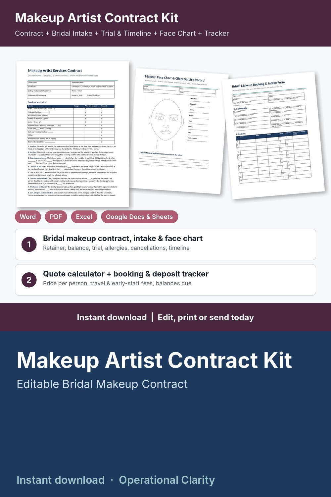

Makeup Artist Contract Kit

Book the date, collect the retainer, plan the morning and get paid in full: a complete makeup artist contract kit with a working quote calculator and booking / deposit tracker, not just a one-page contract.
WHAT'S INSIDE
- Makeup Artist Services Contract (Word + PDF, 2 pages): services and price table (bride, trial, bridesmaids, mothers, juniors, add-ons, travel, early start), non-refundable retainer, balance due date, 15 editable terms (services, retainer, balance and payment, changes to the party, trial, timeline and readiness, workspace and travel, skin and allergies, hygiene and products, cancellation and rescheduling, substitute artist, photos and social media, safety, liability, governing law), payment record and signatures.
- Bridal Makeup Booking & Intake Form (Word + PDF, 2 pages): client and event details, ready-by and photographer times, party list for 12 people, the look (style, finish, eyes, lips, lasting needs), skin and sensitivities, booking summary, photo permission and signatures.
- Makeup Trial Record & Wedding Day Timeline (Word + PDF, 2 pages): products and shades for 15 areas from the trial, changes and approval, key times for the day and a start-to-finish schedule for the whole party.
- Makeup Face Chart & Client Service Record (Word + PDF, 2 pages): printable face chart with product notes, client service history, patch test record and a hygiene checklist.
- Makeup Artist Quote Calculator & Booking / Deposit Tracker (Google Sheets / Excel, 6 tabs):
* Settings: your hourly pay goal, assistant pay, overhead, travel rules, early-start time and fee, buffer, target margin, card fees, minimum booking, retainer % and balance due days
* Services: your menu with minutes, price and product cost per person, a suggested price from your costs and BELOW SUGGESTED flags
* Quotes: up to 4 services x number of people, artists on site, ready-by time; time on site, START-BY time, automatic early-start fee, travel fee, total, retainer, estimated cost, profit and margin with a LOW MARGIN flag
* Bookings: event, venue, contract date, trial, retainer, balance payments and tips; balance, balance due date, estimated profit, days to event and alerts (CONTRACT MISSING, DEPOSIT DUE, BALANCE OVERDUE, BALANCE DUE SOON, BOOK TRIAL, UPDATE STATUS, UPCOMING)
* Dashboard: quotes and acceptance rate, revenue booked, collected, balances to collect, overdue balances, estimated profit, average booking, deposits kept from cancellations, month-by-month and event-type tables, chart and a list of bookings that need attention
- START HERE guide (PDF)
HOW IT WORKS
1. Enter your pay goal, costs, travel rules and retainer % on Settings, then your service menu on Services.
2. Take the enquiry with the Booking & Intake Form and add a row to Quotes: the total, retainer and start-by time fill in.
3. When the client says yes, send the Services Contract and add the booking with the contract date and retainer.
4. Record the look at the trial on the Trial Record and Face Chart, then build the day on the Wedding Day Timeline.
5. Check the Dashboard weekly for balances due, missing contracts and trials to book.
Example data (24 quotes, 20 bookings) shows how it all connects; delete it and type your own. Yellow cells = type here, green cells = calculated.
FORMATS
- Word .docx (edit in Microsoft Word, Google Docs, Pages or LibreOffice) + PDF, US Letter
- Excel .xlsx made for Google Sheets (also works in Excel and LibreOffice; no macros)
This is an instant digital download, no physical item will be shipped.
Editable template, not legal advice. Have the contract reviewed by a local attorney and check your state and local requirements (licensing, insurance, deposit and cancellation rules, sales tax on services) before you use it. The skin and sensitivity questions are information only, not a medical screening tool. Example prices and times are a starting point: set your own rates.